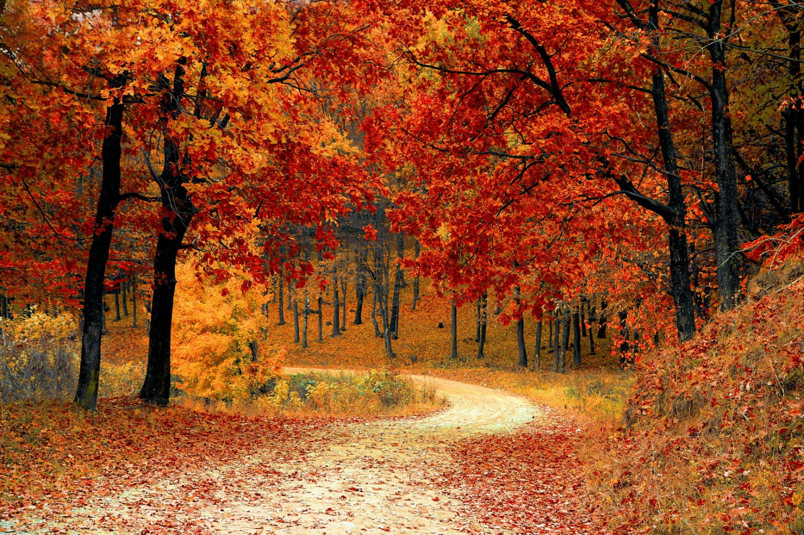
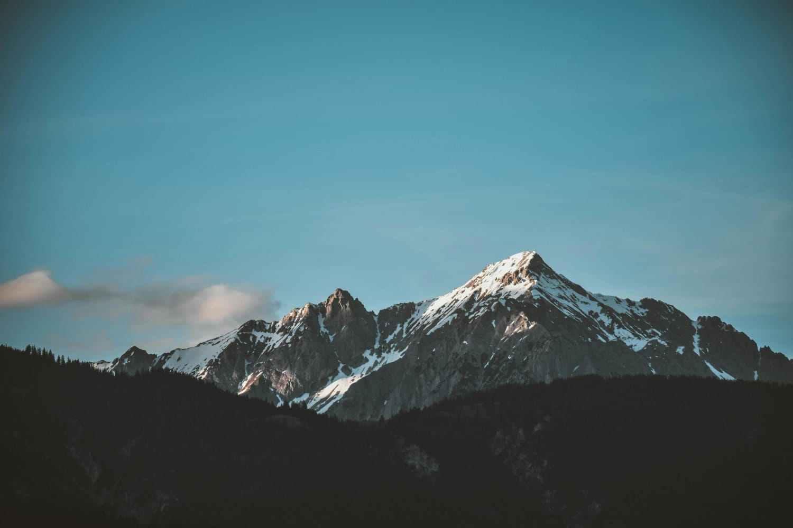
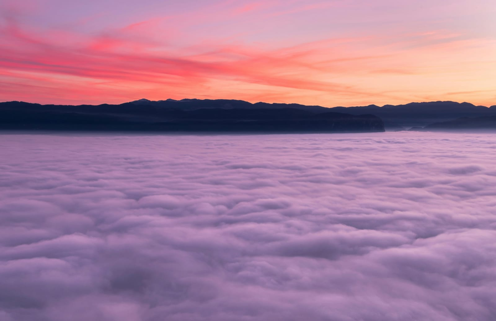
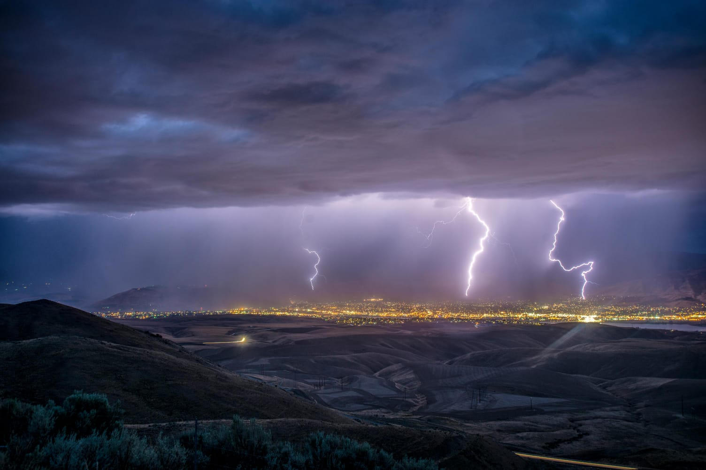
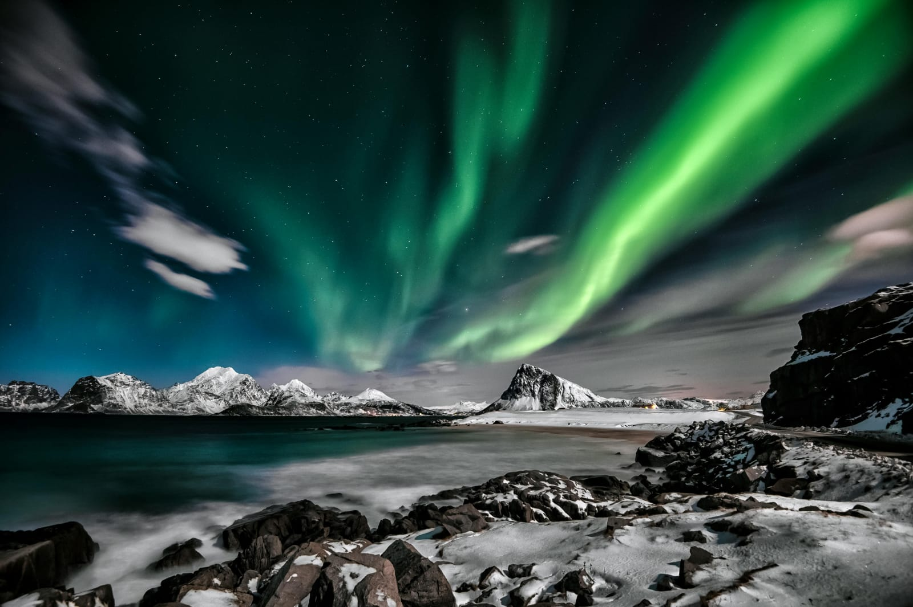

This autumn scene shows a serene forest path, covered in vibrant reds, oranges, and yellows. The stunning foliage invites a peaceful walk, immersing one in nature's beauty and tranquility
This image showcases a snow-dusted mountain peak against a clear blue sky. The contrast between the rugged rock faces and the serene sky highlights the landscape's grandeur, with dark forested hills adding depth.
This tranquil tropical beach sunset features a silhouetted figure swinging between palm trees, with vibrant sky hues and calm ocean waves enhancing the peaceful, reflective ambiance
This serene sunrise above dense clouds features a vivid sky transitioning from pink to orange hues, with dark mountain silhouettes adding contrast and depth, creating a tranquil and majestic scene.
A dramatic night storm with lightning illuminates the sky over a shimmering cityscape. The city's lights contrast with the storm, creating a mesmerizing blend of urban and natural elements.
The aurora borealis, a natural light phenomenon, occurs in Earth's high-latitude skies. It results from solar-charged particles colliding with atmospheric atoms, producing colors like green and purple.
